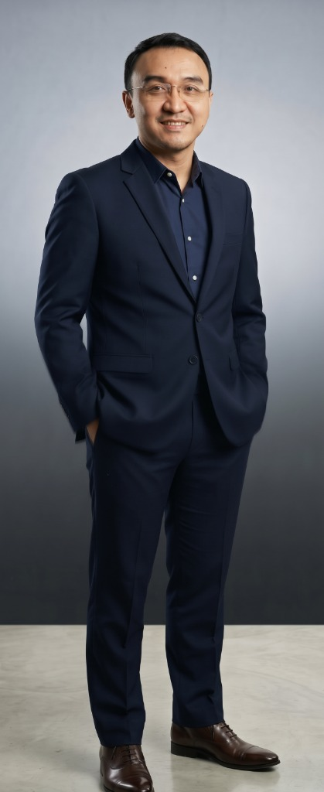
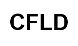

“After over 27 years shaping masterplans from the developer’s side of the table, I have learned that the true measure of architecture is not the grandeur of what we build, but the quiet depth of healing a place returns to the human soul.”
Leading a principal atelier grounded in institutional developer rigor, spatial geometry, and the holistic unity of ALUNA.
We did not begin as observers of development. We began inside it, at BSD City, Sentul Nirwana, Binakarya, MNC Land and CFLD, where design had to answer to land, capital and time. After more than 27 years, we carry that discipline into independent practice: architecture a developer can trust, because we have sat on their side of the table.
We start with questions, not forms: who will live here, what the land allows, what the numbers can carry. We hold every plan to measure and precision, and keep it practical enough to be built. The result is work that is rigorous in its logic and generous in its experience.



Matra gives us the measure of human proportion; Yantra guides the precision of every line. Together, they are the instruments in our hands. Through this quiet discipline, ALUNA fuses Architecture, Landscape, Urban Nature, and Art into one holistic whole — transforming the rigor of logic into a living sanctuary. Every design is created to gently heal the soul of those who dwell within it.
From a territory to a single room, every design carries all four.
Clear structure, human proportion and honest materials. Buildings that shelter people and make daily life easier.
The open ground we design: terrain, planting, water and paths. Outdoor space that shades, cools and invites people outside.
The living city: trees, soil, water and wildlife, kept connected. Habitat for other species, and daily contact with nature for people.
Art in its many forms, woven into the design from the start. It gives a place meaning, identity and a reason to linger.